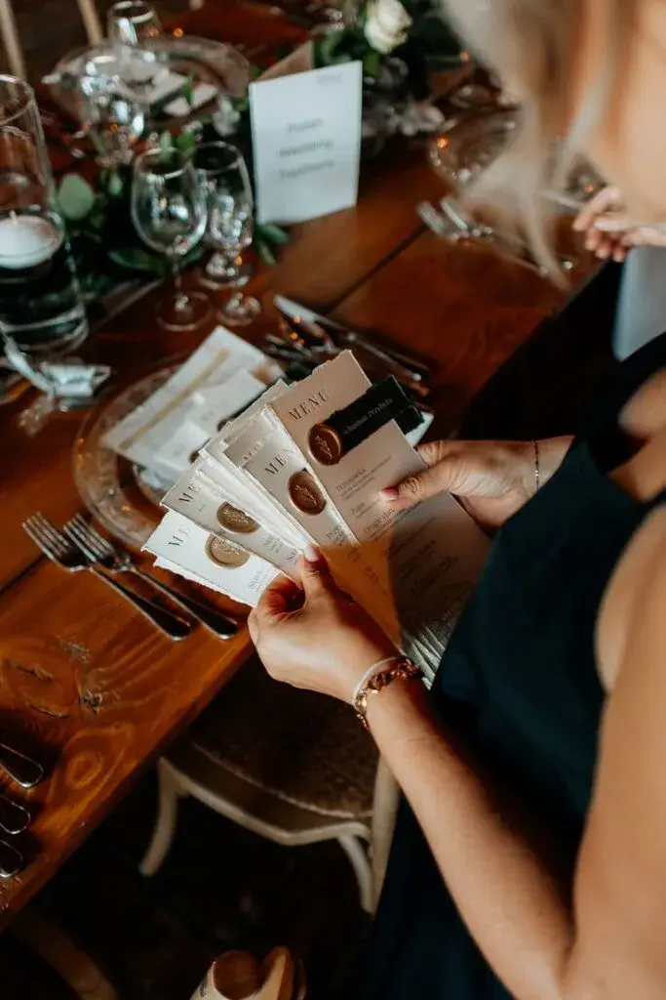

Planning your wedding is an adventure as magical as it is intense. It is a time full of emotions, excitement, dreams and important choices… but also of many decisions to make in a short time. Behind the fittings, the venue visits and the moments of shared joy, there are sometimes unexpected hitches that can quickly turn this beautiful experience into a source of stress.
Between managing suppliers, choosing the venue, organising the budget and the (sometimes overwhelming) expectations of loved ones, it is very easy to make mistakes. And when you are planning a wedding in Nouvelle-Aquitaine, whether around Bordeaux or elsewhere in the region, the options are endless… which can make decisions even harder.
For this period to remain a time of happiness, complicity and precious memories, it is essential to step back and anticipate the most common pitfalls. Good organisation not only saves time, it also avoids unnecessary spending, family tensions and last-minute regrets.
Discover the 9 most common mistakes to avoid during your preparations, so you can live this stage calmly and build a day that reflects you: an authentic, harmonious celebration true to your relationship. Because a successful wedding isn't just beautiful decor or a good meal… above all, it is a day you fully enjoy, surrounded by the right people, without unnecessary pressure.
1. Not planning ahead
Underestimating the time needed to plan a wedding is one of the most common mistakes. Many couples think they can manage everything in a few weeks, but reality is very different. Between finding inspiration, drawing up a realistic budget, booking appointments and coordinating the various suppliers, each step takes time, thought and, above all, plenty of anticipation.
The venue, caterer, photographer or DJ often need to be booked several months, even a year in advance, especially if you want to marry in peak season. And in a region as sought-after as Bordeaux and Nouvelle-Aquitaine, charming venues and renowned suppliers are booked up very quickly. The longer you wait, the more likely you are to have to compromise.
The same goes for the wedding dress and the suit: between fittings, alterations and production times, several months may be needed. This is no small detail, as these are essential elements that must be chosen with care, without rushing.
Without rigorous planning and a clear timeline, you risk having to make decisions in a hurry. And a hurry often means limited choice, higher prices and sometimes services that don't fully match your original vision. On the other hand, planning ahead lets you compare calmly, ask for several quotes, negotiate serenely and build a wedding that truly reflects you.
Good organisation from the start gives you a real luxury: living your preparations with less stress, more pleasure and a light heart right up to the big day.

2. Not setting a clear budget
Not defining a precise budget from the outset is a mistake that can quickly turn the preparations into a real headache. Without a clear financial framework, expenses add up little by little… until they become a source of serious stress, or even tension between you. Yet setting a realistic budget from the start helps you stay in control and plan your wedding with far more peace of mind.
The first step is to set an overall budget that matches your means. Then it is essential to split it into the main spending categories: venue, caterer, decor, stationery, music, outfits, photography, transport and accommodation. This helps you see exactly where your money is going and avoid overspending without realising it.
This breakdown also helps you stay true to your wishes: invest more in what really matters to you (a great meal, a talented photographer, an incredible atmosphere…) and compromise on the rest, without guilt. The goal isn't to have everything, but to build a day that resembles you.
Also remember to anticipate the costs that are often forgotten: tips, delivery fees, taxes, corkage, accessories, outfit alterations, last-minute items… These small, invisible expenses are often what end up throwing the overall budget off balance.
Finally, always allow a safety margin for the unexpected, ideally 5 to 10% of the total budget. This lets you face last-minute expenses without panicking or calling your whole plan into question. A clear budget is simply the foundation for smoother, calmer… and far more enjoyable preparations.
Budget planner
To keep control of your finances, it is essential to plan your budget from the start and track your spending throughout the preparations. A wedding budget tool can make life much easier: it lets you split your budget by category (venue, caterer, decor, outfits, suppliers…), track your payments and plan a margin for the unexpected. You could, for example, use a handy wedding budget simulator. By centralising all your financial information, you gain clarity and peace of mind, and avoid unpleasant surprises.
3. Wanting to control everything yourself
Many couples think they have to manage everything alone, either out of a need for control or to keep costs down. Yet wanting to oversee every last detail can quickly become a huge source of stress, fatigue and even tension, especially as the big day approaches. Planning a wedding takes a considerable amount of energy: dozens of decisions, countless messages, quotes to compare, logistical choices… and coordinating everything so that it all runs perfectly.
Planning a wedding also involves sometimes complex logistics: supplier timings, setting up the decor, managing guests, the ceremony timing, the flow of the meal, entertainment, transitions… And if you marry in the Bordeaux region, weddings often take place in estates or châteaux that require an even more structured approach (access, accommodation, transport, weather, outdoor spaces, etc.).
That is why delegating some tasks is essential to preserve your energy and peace of mind. A wedding planner can, for example, take care of the overall coordination, supplier follow-up, scheduling and the unexpected. Even without a wedding planner, you can rely on your witnesses or trusted loved ones for specific tasks: setting up the decor, welcoming guests, looking after gifts, coordinating entertainment or liaising with certain suppliers on the day.
In reality, delegating doesn't mean losing control: it simply means sharing responsibilities wisely. By sharing tasks, you save time, reduce the pressure and avoid experiencing the preparations as a never-ending race.
The goal is simple: for your wedding to remain a time of pleasure, sharing and emotion, not an exhausting period where you spend more time organising than enjoying. Because, in the end, on that day you should be at the centre of your happiness… not the logistics.


4. Underestimating the time needed for suppliers
Coordinating suppliers takes patience, real organisation and a lot of rigour. Each one, whether caterer, photographer, florist, DJ, decorator or officiant, has their own constraints, deadlines and specific needs. Thinking that everything can be settled quickly is a common mistake: in reality, every detail takes time, approvals and sometimes several exchanges.
Not allowing enough time for meetings, emails, phone calls or last-minute adjustments can lead to oversights, miscommunication or inconsistencies in the running of the day. And these small problems can quickly become a big source of stress as the wedding approaches.
Ideally, set up a clear, detailed schedule shared with all the suppliers involved. It should include the key times, important contacts, exact locations, set-up and take-down times, and the highlights of the day: ceremony, drinks reception, entrance into the dining room, first dance, speeches, arrival of the cake, and so on.
By centralising all the information and sharing it in advance, you considerably reduce the risk of misunderstandings, delays and unnecessary stress. The result: on the big day, everyone knows exactly what to do and when, and you can fully enjoy your wedding without managing the logistics behind the scenes.
5. Neglecting preparation for the big day
On your wedding day, every detail counts, and the slightest approximation can quickly disrupt the flow of the day. Many couples think that “everything will just fall into place”, but without solid preparation this unique moment can soon become a race against the clock. Between suppliers arriving, guests to guide, timings to keep and the unexpected to handle, loose organisation can create a lot of stress.
Not preparing a precise timeline, including key times, transitions and everyone's responsibilities, is a common mistake. Yet this schedule is essential: it must include getting ready, dressing, the ceremony, the drinks reception, the meal, the speeches, the photos and the first dance… but also the “invisible” moments such as travel, set-up and short breaks.
Another often underestimated element: the famous emergency kit. It can save the day in case of small mishaps. Remember a few essentials: safety pins, a sewing kit, plasters, wipes, deodorant, touch-up make-up, basic medicines… and of course tissues (often very useful, for good reasons!).
Room layouts and seating plans are just as essential. Without them, welcoming guests can become chaotic, set-up can fall behind and a simple mix-up can create tension right at the start of the evening. A clear, well-displayed plan helps everyone find their seat easily and avoids wasted time.
Careful preparation beforehand lets you anticipate these situations, react calmly to the unexpected and, above all, delegate effectively. The result: you live your day to the full, with a light heart, enjoying every moment without thinking about logistics. Because on the big day, your only mission should be simple: enjoy it.
6. Letting others influence you
Family, friends, colleagues, social media… there is no shortage of advice, and it usually comes with good intentions. Yet being guided by too many outside opinions can quickly cloud your ideas, create confusion and make decisions much harder. By listening to everyone, you risk no longer knowing what you really want.
The problem is that by trying to please everyone, you often end up making compromise after compromise: decor that doesn't suit you, music choices imposed on you, a guest list that keeps growing, or a ceremony that doesn't reflect your personality. In the end, you may feel you are planning someone else's wedding… instead of your own.
This is all the more true in a region like Bordeaux, where weddings can quickly take a very “traditional” or very “prestigious” turn simply because the setting lends itself to it. But just because the venues are magnificent doesn't mean you have to follow a style or format that doesn't suit you.
Your wedding should above all reflect your relationship, your story and your values, not Pinterest trends or family expectations. So it is essential to learn to say no, calmly and kindly. You don't need to justify yourselves at length: simply explaining your choices is enough. The clearer you are from the start, the faster loved ones adapt.
Listening to advice can be useful, but only if it helps you move forward. Trust your wishes, your intuition and your vision. This coherence is what will make your wedding authentic, harmonious and deeply memorable. And in the end, that is exactly what will make the day a precious memory, for you and your guests alike.
7. Forgetting to enjoy the process
In the rush of preparations, it is very easy to get overwhelmed by to-do lists, deadlines, quotes, appointments and decisions… to the point of forgetting what matters most: fully living this adventure together. By trying to organise everything perfectly, some couples end up seeing only the mental load, not the beauty of this unique time.
Yet every step counts: choosing the venue, the fittings, the tastings, meeting the suppliers, selecting the rings… all of it is an integral part of your story. These are precious moments, sometimes funny, sometimes stressful, but always important, because they build your wedding long before the big day.
And if you are planning your wedding in Nouvelle-Aquitaine, you are lucky enough to enjoy some truly pleasant steps: visiting magnificent estates, tastings in exceptional settings, imagining a ceremony among the vines… All memories that deserve to be savoured rather than rushed.
Take the time to celebrate every small victory: a venue booked, a dress found, a supplier confirmed… These are important milestones. Give yourselves breaks too, moments to step back and even little rituals for two: a dinner to celebrate progress, an evening without talking about the wedding, a walk to unwind and refocus.
By deliberately slowing down and reconnecting with the emotion and meaning of your commitment, you turn the preparations into real memories. Because in the end, a wedding isn't just a day… it is a whole journey. And that journey deserves to be lived with as much pleasure, complicity and joy as the big day itself.
8. Not having a plan B
Unpredictable weather, a late supplier, a small technical glitch or any other surprise… however carefully you plan, there will always be unexpected situations. Not anticipating a plan B for the ceremony, the decor or the running of the day can quickly turn simple setbacks into a real source of stress.
Imagine an outdoor ceremony under a threatening sky with no fallback, a timing that is too tight or a lack of backup equipment: within minutes, the organisation can be disrupted, and what should have been a moment of happiness becomes a headache. Some estates and vineyards offer magnificent outdoor spaces that are exposed to the elements, which makes preparing a plan B even more essential.
Planning alternatives in advance is therefore indispensable. This can include:
- a covered space in case of rain,
- a flexible schedule,
- versatile decor that is easy to move or adapt,
- and a point person to handle emergencies and coordinate suppliers if needed.
Being prepared doesn't mean wanting to control everything, but rather knowing how to adapt calmly and efficiently. This anticipation lets you stay serene on the big day, handle the unexpected without panic and, above all, fully enjoy every moment of your wedding, even if not everything goes exactly to plan.
A good plan B is ultimately the key to turning the unexpected into a simple anecdote rather than a problem.
9. Neglecting communication with your partner
A wedding is above all a project for two, built on dialogue, trust and complicity. Not taking the time to discuss your priorities, your wishes and also your worries can quickly lead to misunderstandings and unnecessary tension throughout the preparations. Each of you has your own expectations, and unspoken feelings can build up if communication isn't regular.
To avoid this, it is essential to set up regular check-ins with your partner. These moments help you stay aligned, share how the planning is going, discuss important decisions and adjust your choices if needed. They are also a chance to support each other, remind yourselves why you chose to marry and celebrate the milestones reached together.
By moving forward hand in hand, you turn the preparations into a positive, enriching experience that strengthens your bond, rather than a source of stress. In the end, good communication is the key to making your wedding not just a perfect day, but also a shared and joyful journey to the big day.
In short…
Planning a wedding is a wonderful and deeply moving adventure, but it also requires good organisation, clear communication and solid preparation. By avoiding these 9 mistakes, you give yourselves every chance of smoother preparations, better control of your budget and far less stress. You will then be able to create an authentic, harmonious and memorable day that reflects your relationship and your story.
With the right professional support and a little preparation, every step becomes a moment to savour rather than a chore. You gain peace of mind, clarity and confidence, which lets you fully enjoy both the preparations and the big day.
Whether you are planning your wedding in Nouvelle-Aquitaine, around Bordeaux or elsewhere in the region, good planning turns logistics into a pleasant, well-managed experience. Your wedding then takes place in the best conditions, gently, emotionally and without a hitch, leaving room for what matters most: celebrating your love, surrounded by those who truly count.
More inspiration
Lovely Day Event offers several services
Wedding planning
I step in at every stage of your preparations and guide you through your choices, bringing ideas and suggestions so that your wedding looks like no one but you.
On-the-day coordination
I will be the conductor of your day, managing the suppliers, the set-up of your decor and the smooth running of this beautiful day.
Wedding design
Creative and passionate, I am a certified Wedding Designer and I create a scenographic atmosphere that matches the theme of your wedding. Styling is included in the Signature package, or offered as an add-on to on-the-day coordination.